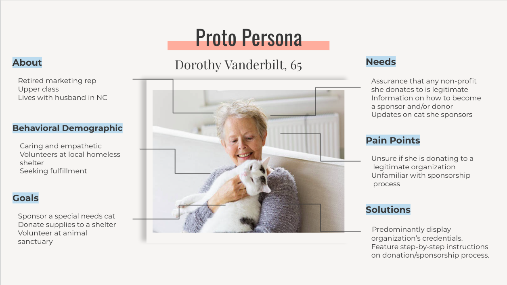
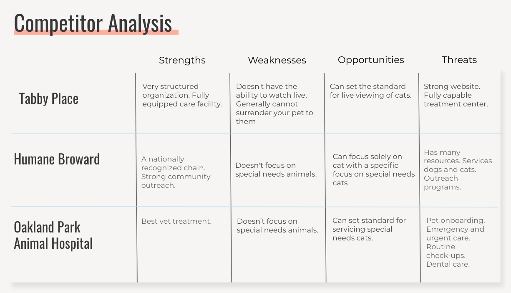
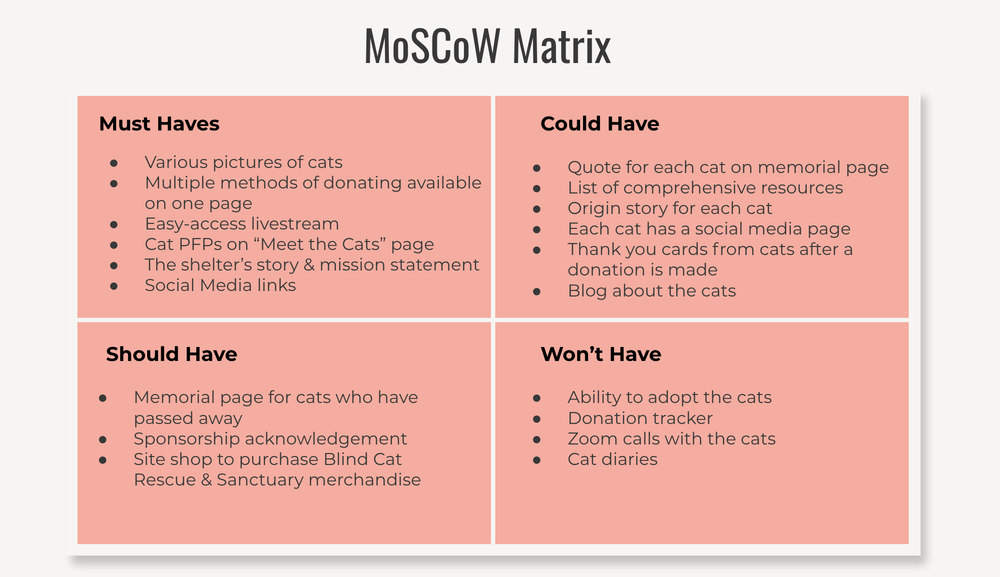

Problem
The current Blind Cat Rescue & Sanctuary website is outdated, difficult to navigate, and lacks organization and transparency. This could lead to a decrease in donors and therefore a decrease in funds needed to care for the cats.
Solution
Our team created a new website that is easy to navigate, sincere, and informative. We also gave the website a much needed update and added more visual appeal. By improving the site and simplifying the donation and sponsorship process, we hope to increase donors and funds for the sanctuary.
tools
Figma
team
4 ux/ui designers
time span
2 weeks
Oct 2021
Background
Blind Cat Rescue & Sanctuary
Blind Cat Rescue & Sanctuary is a lifetime sanctuary for blind, FIV positive and Leukemia positive cats located in St. Pauls, North Carolina. It was founded by a mother and daughter team to answer the need for a safe space for blind cats that were deemed not adoptable by regular shelters. Blind cats are regularly killed at shelters because of their condition. In some states, this is actually legal. If an animal is sick, injured, or blind, it may be killed immediately in animal control facilities.
Website
Upon reviewing the organization's website, our team discovered several major flaws with its layout, accessibility, and usability. It seemed like the website hadn't been updated in years. All the social media logos were outdated and information was strewn about all over the place seemingly without any logic or sense of flow. The greatest issue, however, was that the Donate button was at times difficult to find or confusing. Our team needed to conduct a total overhaul. We began by examining each and every page of the website to determine what was necessary and what could be discarded or modified.
Research
Proto Persona
Based on our preliminary research, we created a proto persona to help prioritize and drive focus for our product design. Many of the organization's patrons were older members of the population. As such, legibility and simplicity quickly became two of our top priorities.
User Interviews
We conducted four user interviews with users who had previously donated to a non-profit organization. Our objective was to understand why users donated to a particular non-profit and if they would donate again We discovered that most of our interviewees had concerns about a non-profit's legitimacy. Personal experience or news coverage of shady non-profits had soured their perceptions towards non-profits and increased their suspicion towards charities as a whole.
Nicole, 36
What factors influence you to donate to a non-profit?
"Legitimacy and how much [the non-profit] pulled at my heartstrings."
Clarissa, 46
What do you look for when making a donation?
"I want to ensure that I am donating to an honest company and not a scam."
David, 36
What expectations do you have when looking at a non-profit website?
"Some way of showing the money is going where it needs to be."
Competitor Analysis
We conducted a competitor analysis of three organizations that shared commonalities with the Blind Cat Rescue & Sanctuary.
Problem Statement
How might we reach more users and donors to raise awareness about cats with special needs?
Ideation
MoSCoW Matrix
In order to make sure our team was on the same page, we created a MoSCoW Matrix to determine what feature were absolutely essential to the new website. We determined that the site should be image-heavy to elicit an emotional reaction from the user, and have an easy to access livestream embedded directly within the site to draw in more traffic.
Lo-fi Wireframes
When redesigning our website, it was important to maintain a clean and modern aesthetic. We wanted our call to action buttons to be easily identifiable and social media links to be highlighted since this is where our non-profit receives most of its user traffic.

Style Tile
I wanted the website to radiate warmth so I chose to use a peachy pastel pink as the primary colour. We decided on round buttons and corners to communicate a friendly feeling to the user. I also created a new logo that would function better for scalability purposes.

Hi-fi Prototypes
Desktop

Mobile

Testing
We conducted 5 user tests with users of varying ages and backgrounds. Our objectives was to gain insight into user opinions and observe if they could navigate the site easily. 100% of our users were able to complete the required tasks. Some feedback we received was:
- Assure all buttons are consistent throughout the site
- Create a more informative and streamlined payment system
- Maintain emotional connection on homepage by revising the information architecture
We implemented these suggestions by moving the Sponsor buttons to the top of the page, and rearranging the flow of the homepage. We also added a payment page, animations, and logos.
Final Prototype
May take time to load. Please view on full screen.
Takeaways
We believe our redesign of the Blind Cat Rescue & Sanctuary reflects the goals we initially set out to accomplish based on user research, user interviews, and user testing. We also believe the new aesthetic of our website will establish an emotional connection between users and the blind cats looking to get sponsored. It would have been nice to have gotten in touch with the owners of the Blind Cat Rescue & Sanctuary to bounce some ideas off them and gather their thoughts on their original design, however they never responded. All in all, we are proud of work and have confidence this final iteration captures the ideas we formulated throughout the design process.